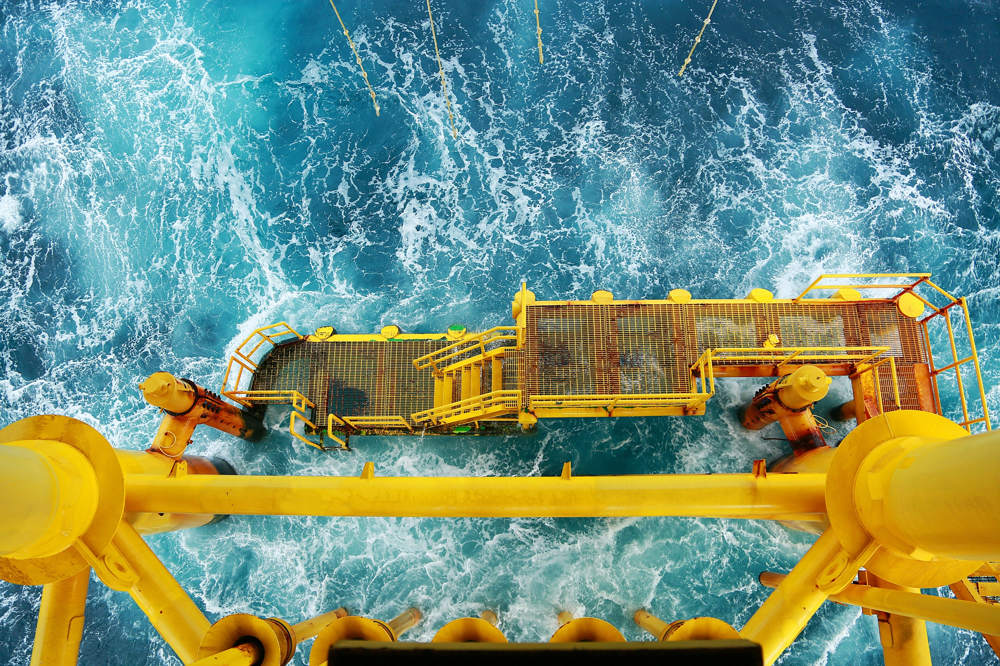

深海浮动风电平台是中国可再生能源发展中的一项重要技术创新，也是实现绿色低碳目标的重要路径之一。在中国追求碳中和和可持续发展的进程中，深海浮动风电平台的发展不仅展示了中国在海洋工程和新能源领域的技术实力，更体现了中国应对气候变化、推动绿色经济的决心。
首先，深海浮动风电平台是什么？它是一种利用海上风能发电的技术装置，不同于传统的海上风电场，浮动风电平台不依赖于固定的海底基础，而是通过浮动结构将风力发电机组安置在深海区域。这种设计能够大大扩展风电场的建设区域，使得深海区域的风能资源得以利用，从而提高整体发电效率。在中国，沿海地区的风能资源丰富，尤其是南海和东海区域，深海浮动风电平台的发展有助于中国更全面地开发这些宝贵的资源。
中国在深海浮动风电平台的建设上已经取得了许多显著成就。近年来，中国成功研发了多种类型的浮动风电平台，并在南海地区进行试验性部署。例如，中国自主研发的“海龙一号”浮动风电平台采用了先进的浮力设计和抗风浪技术，可以在台风频发的区域稳定运行。这一技术突破标志着中国在海洋风电技术方面达到了国际领先水平。除此之外，中国还在不断探索更大规模、更高效的深海风电平台建设，以期在未来大规模部署深海风电场，实现更高的能源产出。
深海浮动风电平台的优势在于它能够远离近海人类活动密集的区域，从而降低对海洋生态环境的影响。此外，深海区域通常风速更强、更稳定，这意味着深海浮动风电平台可以比近海风电场产生更多的电力。这种高效、低影响的能源解决方案，符合中国可持续发展的战略目标，也为全球能源转型提供了重要参考。
中国政府对于深海浮动风电平台的发展给予了高度重视和支持。近年来，中国政府出台了多项政策，鼓励科研机构和企业加大对海上风电技术的研发投入，同时推动国际合作，与欧洲、日本等海上风电技术先进国家开展技术交流和合作。这些政策的实施，为中国深海风电产业的发展创造了良好的环境，也为未来大规模商业化应用奠定了坚实基础。
在这个国庆节，我们有理由为中国在深海浮动风电平台领域取得的成就感到自豪。这些成果不仅展示了中国在海洋工程和新能源领域的技术实力，更反映了中国在全球应对气候变化、推动可持续发展方面的坚定决心。未来，随着中国海上风电技术的不断进步，深海浮动风电平台有望成为中国能源结构中的重要组成部分，并为全球能源转型和低碳发展提供更多“中国方案”。
总之，深海浮动风电平台的创新和发展，标志着中国在海洋可再生能源领域的技术突破。在这个国庆节，让我们为中国在这项技术上的进步感到骄傲，并期待未来中国在绿色能源领域做出更多贡献。相信在不久的将来，中国的深海风电产业将继续快速发展，为实现全球气候目标和能源转型注入新的动力。